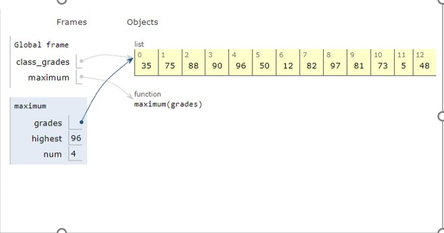
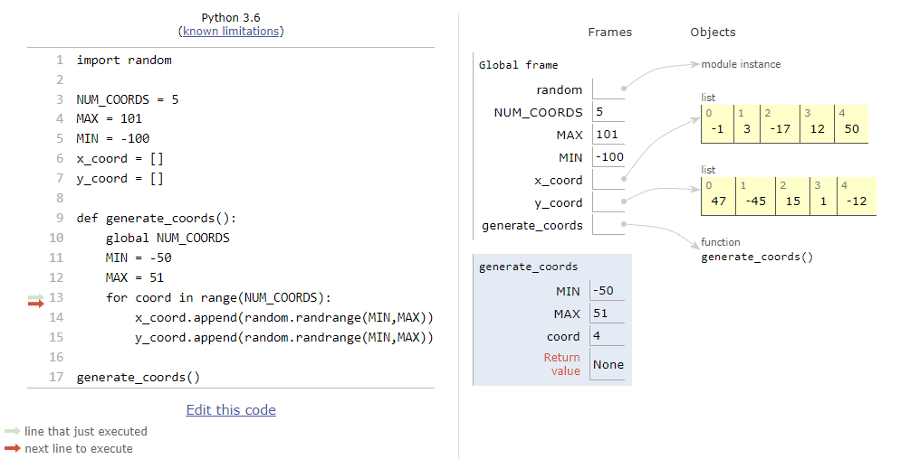

8.15. Chapter Assessment¶
Write a function called int_return that takes an integer as input and returns the same integer.
Write a function called add that takes any number as its input and returns that sum with 2 added.
Write a function called change that takes any string, adds “Nice to meet you!” to the end of the argument given, and returns that new string.
You will need to write two functions for this problem. The first function, divide that takes in any number and returns that same number divided by 2. The second function called sum should take any number, divide it by 2, and add 6. It should return this new number. You should call the divide function within the sum function. Do not worry about decimals.
:
{kind=link}
The screenshot above depicts a CodeLens program mid-execution. We have a function called maximum() that is in the middle of its execution. The purpose of the function is to find the highest value in the list and then return it. Looking at the diagram, What should be the return value?
- NUM_COORDS
- Incorrect, NUM_COORDS is under the global frame in the Codelens screenshot. Look at the generate_coords frame
- MAX
- Correct, we are using the local version of MAX declared inside the function
- MIN
- Correct, we are using the local version of MIN declared inside the function
- x_coord
- Incorrect, the x_coord append line is using a reference of the global frame list x_coord
- coord
- Correct, the iterator variable is still a variable and in this case it is created locally inside the function
:
{kind=link}
Using the Codelens diagram screenshot, select all the variables that are local to the function generate_coords
{kind=link}
{kind=link}